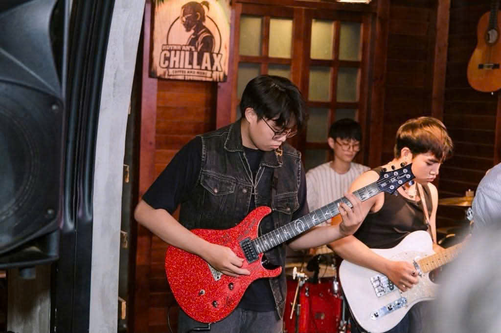

Họ Và Tên: Nguyễn Chí Kiên

- tháng năm sinh: 04/01/2008 (18 tuổi)
- tính: Nam
- sinh: tỉnh Đắk Lắk
- Quê quán: tỉnh Phú Thọ
Nguyễn Chí Kiên hiện nay là sinh viên năm nhất tại trường Đại học Sư Phạm thành phố Hồ Chí Minh, bạn là một nhệ sĩ guitar đến từ Đắk Lắk với những thành tích như giải ba nghệ thuật Guitar cấp tỉnh, giải khuyến khích nghệ thuật âm nhạc mở rộng, giải nhất Giai điệu tuổi hồng cấp trường, là một trong những thành viên đóng góp về nghệ thuật nhiều nhất tại trường THPT Lê Quý Đôn tỉnh Đắk Lắk, ngoài mảng nghệ thuật, Chí Kiên còn có thành tích về những giải thể thao như giải nhất Bóng chuyền Hội khỏe Phù Đổng cấp trường, giải ba vô địch bóng chuyền cấp tỉnh, ngoài đem mê về nghệ thuật thì Kiên cũng có đam mê với máy tính và công nghệ thông tin, nhưng tuy có cố gắng, bạn vẫn chưa có thành tích nào về các giải IT các cấp, bạn là một người có tính linh hoạt và rất năng động, tuy bạn có kiệm lời nhưng mà khi đã làm việc thì làm việc rất tốt.
Thông tin liên hệ
- Số điện thoại: (+84) 373 13 0011
- Email: nguyenchikiencubi@gmail.com
- mail: 5201104047@student.hcmue.edu.vn
- Mô tả: nếu bạn có hứng thú với nghệ thuật và muốn booking biểu diễn hoặc có ý muốn học tập nhạc cụ (guitar) thì hãy liên hệ booking cho Chí Kiên bằng cách bấm vào số điện thoại và email này nha.
Dưới đây là sở thích của Chí Kiên
- Chơi đàn guitar: đây không chỉ là một đam mê mà còn là một nghề đã giúp Kiên trở nên được nổi tiếng tại địa phương, và cũng như đã mang lại cho Kiên nhiều thành tựu đáng nhớ, ngoài ra Kiên cũng sử dụng đam mê này để kiếm thu nhập dù chỉ còn rất trẻ.
Sau đây là những kỹ năng của Chí Kiên
- Chơi đàn guitar: với đam mê của Chí Kiên,thì bạn đã trau dồi rất nhiều kiến thức vào kỹ năng nghệ thuật này.
- Khả năng chơi bóng chuyền: vì có lợi thế chiều cao, Chí Kiên chơi bóng chuyền rất tốt ở các vị trí cần chiều cao, nhờ thế Kiên đã dành được các giải đấu về môn bóng chuyền.
- Làm việc nhóm hiệu quả: bạn đã từng có kinh nghiệm làm lớp trưởng ở 3 năm cấp 3, vì thế bạn cũng đã có kinh nghiệm để làm các công việc nhóm cũng như dẫn dắt đội nhóm làm việc hiệu quả.
THỜI KHÓA BIỂU
| Tiết | Thứ 2 | Thứ 3 | Thứ 4 | Thứ 5 | Thứ 6 | Thứ 7 | CN |
|---|---|---|---|---|---|---|---|
| 1 | Triết học Mác-Lênin | ||||||
| 2 | |||||||
| 3 | |||||||
| 4 | |||||||
| 5 | |||||||
| 6 | |||||||
| 7 | Thiết kế web | Cơ sở toán trong CNTT | |||||
| 8 | |||||||
| 9 | |||||||
| 10 | Lập trình cơ bản | Cơ sở toán trong CNTT | Lập trình cơ bản | Toán rời rạc | GDTC 1 | ||
| 11 | |||||||
| 12 | |||||||
| 13 | Thiết kế web | Triết học Mác-Lênin | Lập trình cơ bản | ||||
| 14 | |||||||
| 15 |